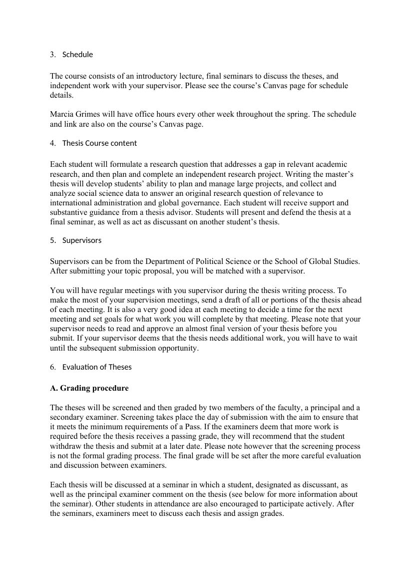
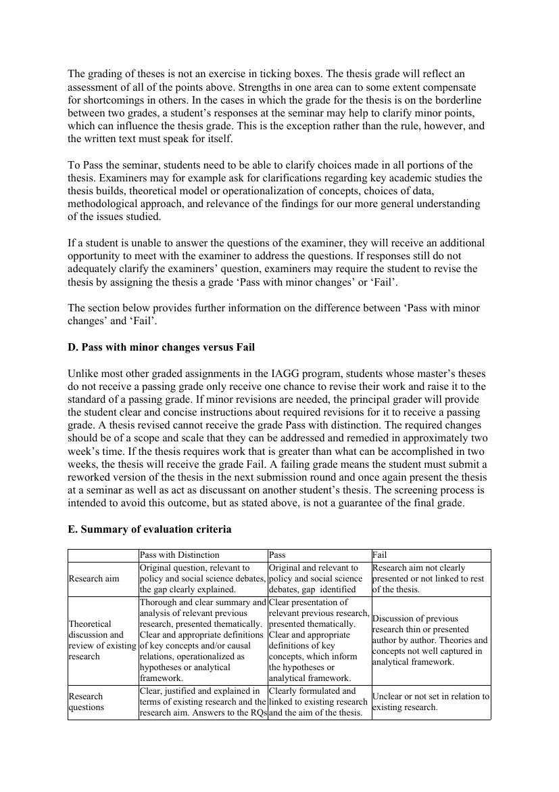
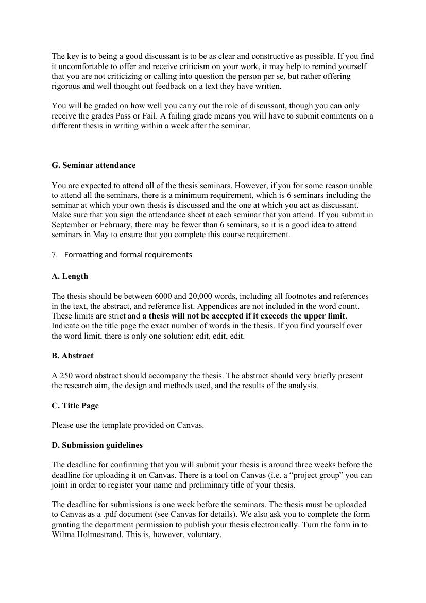

Belägg för examinationsmatrisens markeringar · Källa: kursguide V26
Tabellen nedan styrker examinationsmatrisens markeringar för AG2500 mot kursguide V26. Kursen examineras genom själva uppsatsen, ett slutseminarium där studenten presenterar och försvarar uppsatsen, opposition på en annan students uppsats samt obligatorisk närvaro vid minst sex seminarier.
| Examinationsform (per matris) | Citat ur kursguide V26 | Källa |
|---|---|---|
| Uppsats / research paper | Each student will formulate a research question that addresses a gap in relevant academic research, and then plan and complete an independent research project. Writing the master's thesis will develop students' ability to plan and manage large projects, and collect and analyze social science data to answer an original research question of relevance to international administration and global governance. The thesis should be between 6000 and 20,000 words, including all footnotes and references in the text, the abstract, and reference list. |
Sid 2, 7 — Se sida → |
| Muntlig presentation | Students will present and defend the thesis at a final seminar, as well as act as discussant on another student's thesis. Each thesis will be discussed at a seminar in which a student, designated as discussant, as well as the principal examiner comment on the thesis. |
Sid 2 — Se sida → |
| Muntlig tentamen | To Pass the seminar, students need to be able to clarify choices made in all portions of the thesis. Examiners may for example ask for clarifications regarding key academic studies the thesis builds, theoretical model or operationalization of concepts, choices of data, methodological approach, and relevance of the findings for our more general understanding of the issues studied. If a student is unable to answer the questions of the examiner, they will receive an additional opportunity to meet with the examiner to address the questions. If responses still do not adequately clarify the examiners' question, examiners may require the student to revise the thesis … |
Sid 5 — Se sida → |
| Seminariedeltagande | You are expected to attend all of the thesis seminars. However, if you for some reason unable to attend all the seminars, there is a minimum requirement, which is 6 seminars including the seminar at which your own thesis is discussed and the one at which you act as discussant. |
Sid 7 — Se sida → |
| Opposition / peer review | Each student is also required to act as discussant for one other student's thesis, as well as attend a minimum of four additional thesis seminars. Discussants should read the theses very carefully and consider the choices the author made along the way. … The discussant should prepare 7-10 questions to discuss with the author. This part of the seminar should take around 40 minutes. You will be graded on how well you carry out the role of discussant, though you can only receive the grades Pass or Fail. A failing grade means you will have to submit comments on a different thesis in writing within a week after the seminar. |
Sid 7 — Se sida → |

Sida 2 — Thesis course content + Evaluation of Theses
Sida 5 — Grades and Grading (muntlig examination vid seminariet)
Sida 7 — Discussant role + seminar attendance